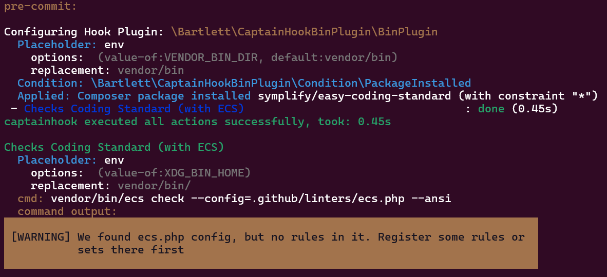

Easy-Coding-Standard aka ECS
Visit Official Project Site
Goals
See how to use the binary-directory option
to specify the binary command folder (XDG_BIN_HOME environment variable) of your favorite CLI tools.
Installation
Note
Generated with Composer 2.9 (and composer-bin-plugin 1.9) on PHP 8.2 runtime
[bamarni-bin] Checking namespace vendor-bin/ecs
Loading composer repositories with package information
Updating dependencies
Lock file operations: 1 install, 0 updates, 0 removals
- Locking symplify/easy-coding-standard (13.0.4)
Writing lock file
Installing dependencies from lock file (including require-dev)
Package operations: 1 install, 0 updates, 0 removals
- Downloading symplify/easy-coding-standard (13.0.4)
- Installing symplify/easy-coding-standard (13.0.4): Extracting archive
Generating autoload files
1 package you are using is looking for funding.
Use the `composer fund` command to find out more!
No security vulnerability advisories found.
Run sample
{
"config": {
"allow-failure": false,
"bootstrap": "examples/vendor-bin-autoloader.php",
"ansi-colors": true,
"git-directory": ".git",
"fail-on-first-error": false,
"verbosity": "normal",
"plugins": [
{
"plugin": "\\Bartlett\\CaptainHookBinPlugin\\BinPlugin",
"options": {
"binary-directory": "{$ENV|value-of:VENDOR_BIN_DIR|default:vendor/bin}"
}
}
]
},
"pre-commit": {
"enabled": true,
"actions": [
{
"action": [
"{$ENV|value-of:XDG_BIN_HOME}ecs",
"check",
"--config=.github/linters/ecs.php",
"--ansi"
],
"config": {
"label": "Checks Coding Standard (with ECS)"
},
"options": {
"package-require": "symplify/easy-coding-standard"
}
}
]
}
}
Note
Explains about the captainhook-ecs-sample.json config file
The {$ENV|value-of:XDG_BIN_HOME} syntax (in your action definition line) allow to lookup directory
where to find the binary vendor:
- declared by the
binary-directoryoption definition - allow overrides look up directory by the
XDG_BIN_HOMEenvironment variable
